The House in Fata Morgana
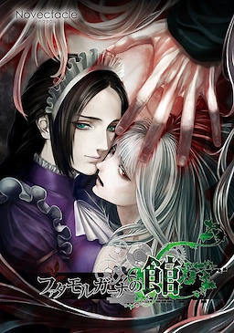
Ano de Lançamento: 2012.
Estúdio/Produtor: NOVECT.
Gênero: Horror Gótico/Mistério.
Duração: 35 horas.
Classificação Indicativa:
Tem em pt-br: ✅
Sinopse:
Você acorda em uma velha mansão decadente.
Uma mulher com olhos de jade está diante de você, informando-o de que você é o dono
da casa
e ela, sua criada. No entanto, você não tem memórias, nenhuma noção de si
mesmo — ou, na
verdade, qualquer certeza de que esteja vivo.
A criada o convida a acompanhá-la em uma jornada pelos corredores sem vida da mansão,
para
testemunhar as inúmeras tragédias que se abateram sobre seus moradores. Ela
sugere que, entre
elas, talvez você encontre algum vestígio de si mesmo.
Katawa Shoujo
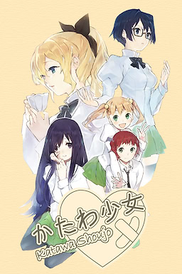
Ano de Lançamento: 2012.
Estúdio/Produtor: Four Leaf Studios.
Gênero: Romance/Slice of Life.
Duração: 33 horas e 45 minutos.
Classificação Indicativa:
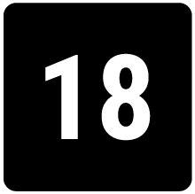
Tem em pt-br: ✅
Sinopse:
Hisao Nakai é um estudante normal do ensino médio, atualmente no último ano. Um dia,
Hisao
encontra uma carta anônima em seu livro de matemática, instruindo-o a encontrar
o remetente em
um
local específico. A remetente acaba sendo sua paixão, porém,
enquanto ela se declara para ele,
ele
desmaia repentinamente. Ele acorda em um leito
de hospital e os médicos lhe informam que o
motivo do
desmaio foi uma arritmia, uma
rara condição cardíaca que causa batimentos cardíacos irregulares.
Por
conta disso,
seus pais o matricularam em Yamaku, uma escola para estudantes com deficiência
física.
Ace Attorney - A Trilogia
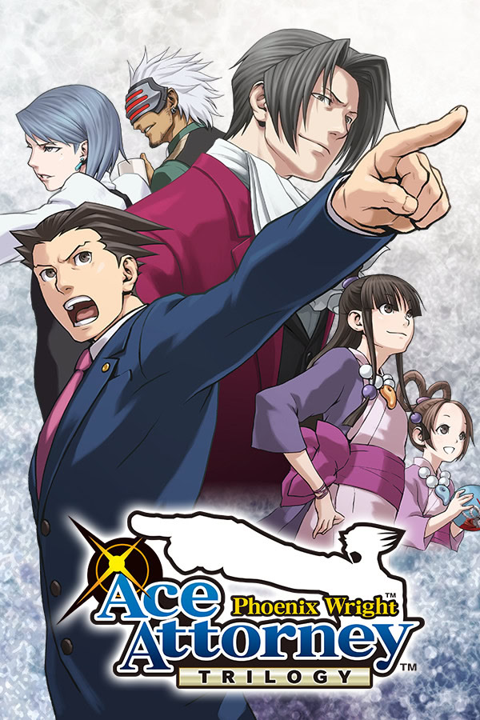
Ano de Lançamento: 2001.
Estúdio/Produtor: CAPCOM.
Gênero: Comédia/Mistério.
Duração: 64 horas e 37 minutos.
Classificação Indicativa:
Tem em pt-br: ✅
Sinopse:
O protagonista é Phoenix Wright. No primeiro jogo, ele é um advogado
novato recém-formado,
assumindo um cargo no escritório de advocacia
Fey & Co., dirigido por Mia Fey, uma advogada de
defesa que ajudou a
absolver Wright de um assassinato anos antes dos eventos do primeiro
jogo.
Quando Mia é assassinada, Wright assume o escritório com a ajuda
de Maya Fey, irmã mais nova de Mia,
e renomeia o escritório para
"Wright & Co". Law Offices". A família Fey tem a habilidade de
canalizar espíritos, o que às
vezes permite que Maya canalize o
espírito de Mia para Wright, auxiliando-o no tribunal. Wright
desenvolve uma rivalidade com o promotor Miles Edgeworth, já que ambos
se enfrentam no tribunal.
Saya no Uta
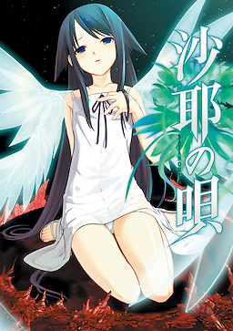
Ano de Lançamento: 2003.
Estúdio/Produtor: NITRO+.
Gênero: Horror/Romance.
Duração: 6 horas e 10 minutos.
Classificação Indicativa:
Tem em pt-br: ✅
Sinopse:
A história gira em torno de Fuminori Sakisaka, um estudante de medicina
que sofreu um acidente
de carro que tirou a vida de seus pais e o
deixou gravemente ferido.
Ele foi salvo por uma cirurgia cerebral experimental que,
coincidentemente, alterou
drasticamente sua percepção do mundo.
Agora, tudo lhe parece composto de intestinos viscosos e sangue. Além
disso, seus outros
sentidos — tato, audição, olfato e paladar — também
estão comprometidos, assim como sua visão,
prejudicando ainda mais sua
saúde mental.
O desejo de viver de Fuminori diminui e, certa noite, ainda no
hospital, ele cogita o suicídio.
No entanto, uma garota de vestido
branco chamada Saya aparece diante dele. Em contraste com o
ambiente
horrível, ela parece completamente normal, senão deslumbrante. Fuminori
logo se
apaixona por Saya, e ela se torna sua razão de viver.
Fate/stay night
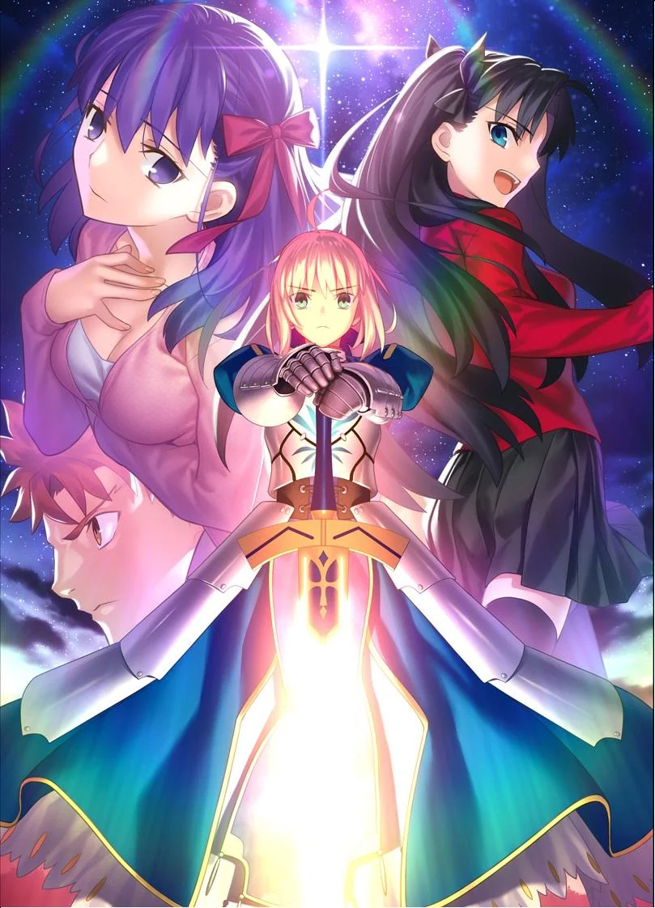
Ano de Lançamento: 2004.
Estúdio/Produtor: Type-Moon.
Gênero: Fantasia/Ação.
Duração: 88 horas e 26 minutos.
Classificação Indicativa:
Tem em pt-br: ✅
Sinopse:
Na agitada cidade de Fuyuki, uma batalha secreta se desenrola nas sombras.
A Guerra do Santo Graal, uma brutal batalha campal, coloca sete magos, conhecidos
como Mestres,
uns contra os outros. Cada Mestre invoca um guerreiro formidável de
diferentes eras como seu Servo,
todos competindo pelo prêmio máximo: o Santo Graal,
um artefato que realiza desejos.
Higurashi no Naku Koro ni
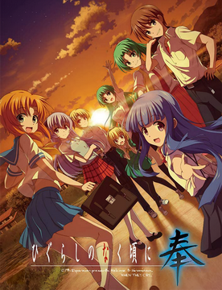
Ano de Lançamento: 2002.
Estúdio/Produtor: 07th Expansion.
Gênero: Terror/Mistério.
Duração: 115 horas e 52 minutos.
Classificação Indicativa:
Tem em pt-br: ✅
Sinopse:
Hinamizawa, uma pequena vila rural no Japão, por volta de 1983. A vila é conhecida
por seu
festival anual Watanagashi, que homenageia a divindade local, Oyashiro-sama.
A história acompanha Maebara Keiichi, um adolescente que se mudou recentemente para
Hinamizawa
com sua família. Ele rapidamente faz amizade com um grupo de garotas
locais: Ryuugu Rena, Sonozaki
Mion, Houjou Satoko e Furude Rika. À primeira vista,
Hinamizawa é uma comunidade pacífica e unida.
No entanto, Keiichi logo descobre que a
vila abriga segredos sombrios e um histórico de
desaparecimentos misteriosos e
assassinatos brutais que ocorrem todos os anos por volta da época do
Festival
Watanagashi.
Planetarian
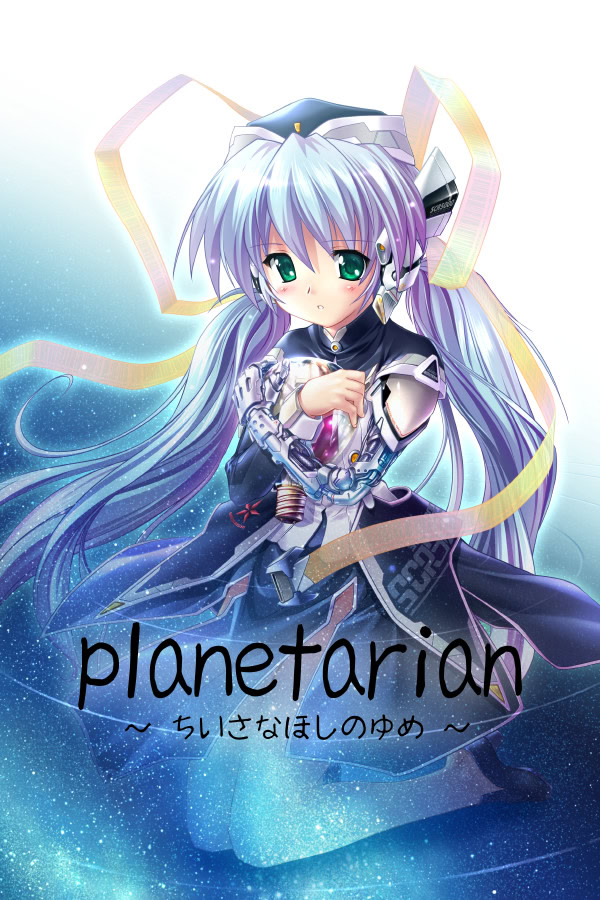
Ano de Lançamento: 2004.
Estúdio/Produtor: Key.
Gênero: Ficção Científica/Drama.
Duração: 3 horas e 54 minutos.
Classificação Indicativa:
Tem em pt-br: ✅
Sinopse:
Trinta anos se passaram desde o fracasso do Programa de Colonização Espacial.
A humanidade está quase extinta. Uma chuva perpétua e mortal cai sobre a Terra.
Homens conhecidos como "Catadores" saqueiam bens e artefatos das ruínas da
civilização.
Um desses Catadores se infiltra sozinho na mais perigosa de todas as ruínas — uma
"Cidade
Sarcófago".
No centro desta cidade morta, ele descobre um planetário pré-guerra.
E, ao entrar, é recebido por Hoshino Yumemi, uma robô companheira.
Sem a menor dúvida, ela presume que ele é o primeiro cliente que recebe em 30 anos.
Ela tenta mostrar-lhe as estrelas imediatamente, mas o projetor do planetário está
quebrado.
Incapaz de entender a conversa, ele acaba concordando em tentar consertar o projetor.
Shan Gui
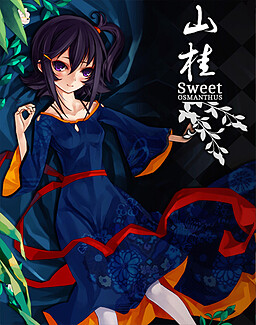
Ano de Lançamento: 2014.
Estúdio/Produtor: Yanghong Gongfang & ZiX Solutions.
Gênero: Aventura/Fantasia.
Duração: 2 horas.
Classificação Indicativa:
Tem em pt-br: ✅
Sinopse:
Era o fim do verão, um aroma agradável pairava no ar. Duas garotas, Han Hui e He Jia,
se
encontraram por acaso nas montanhas e viveram uma jornada maravilhosa que só elas
viveram.
Tsui no Stella
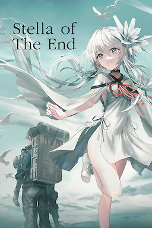
Ano de Lançamento: 2022.
Estúdio/Produtor: Key.
Gênero: Drama/Ficção Científica.
Duração: 9 horas e 50 minutos.
Classificação Indicativa:
Tem em pt-br: ❌
Sinopse:
Máquinas gigantes agora vagam pela Terra, levando a humanidade à beira da extinção.
Jude Gray, um mensageiro errante, recebe um pedido para entregar uma carga muito
especial. Essa
carga se revela ser Philia, uma garota androide imune às enigmáticas
Máquinas da Singularidade.
Jude não tem escolha a não ser escoltar Philia até seu destino, fazendo o possível
para
protegê-la e ensiná-la a sobreviver neste mundo hostil. Juntos, eles devem
atravessar a região
selvagem e inóspita, evitando ameaças tanto mecânicas quanto
humanas.
Durante toda a jornada, Philia insiste que um dia se tornará humana.
O que aguarda Jude e Philia no fim da estrada? A humanidade ainda pode ser salva, ou
já é tarde
demais?
Tsukihime -A piece of blue glass moon-
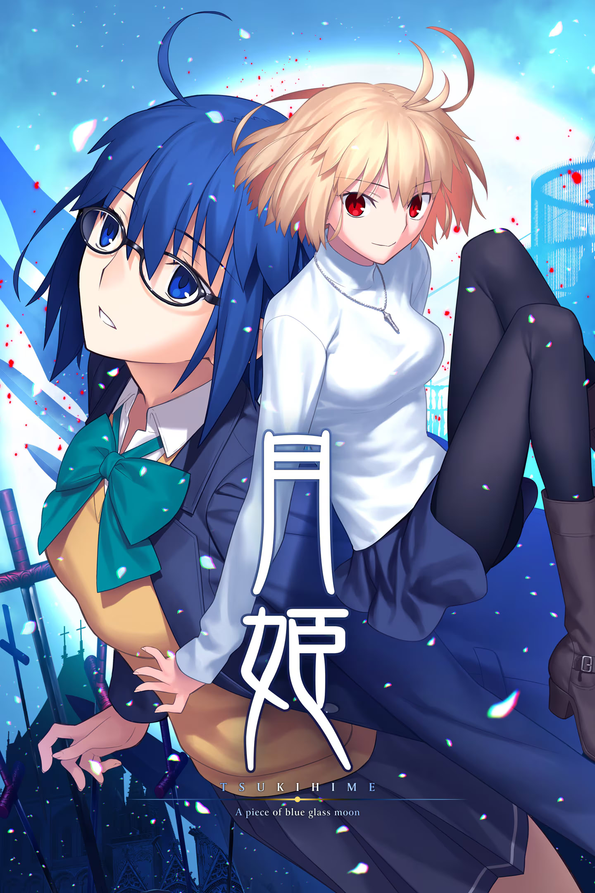
Ano de Lançamento: 2021.
Estúdio/Produtor: Type-Moon.
Gênero: Romance/Fantasia.
Duração: 60 horas.
Classificação Indicativa:
Tem em pt-br: ✅❌
Sinopse:
Esta história é sobre um jovem chamado Toono Shiki que, após sofrer um acidente
traumático,
acorda no hospital com a capacidade de ver linhas e rachaduras em todas
as superfícies e seres.
Essas linhas, quando traçadas com qualquer objeto afiado ou
rombo, causam cortes permanentes.
Forçado a ver essas linhas por toda parte, Shiki
fica perturbado até conhecer uma garota maga que
lhe dá óculos que lhe permitem viver
uma vida normal.
Anos depois, após viver na casa de um parente, a morte de seu pai o faz retornar à
mansão que
deixara anos atrás. Lá, ele precisa aprender a conviver com sua irmã mais
nova e duas empregadas
domésticas.
Um dia, a vida de Shiki piora quando, a caminho da escola, ele encontra uma mulher
loira e é
tomado por um desejo incontrolável de matá-la.
Doki Doki Literature Club
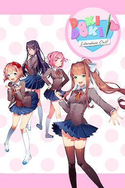
Ano de Lançamento: 2017.
Estúdio/Produtor: Team Salvato.
Gênero: Terror.
Duração: 6 horas e 15 minutos.
Classificação Indicativa:
Tem em pt-br: ✅
Sinopse:
A história protagoniza um aluno do ensino médio que se junta ao Clube de Literatura
da escola e
interage com os quatro únicos membros do clube, quatro garotas, que
parecem esconder um segredo
sinistro.
STEINS;GATE
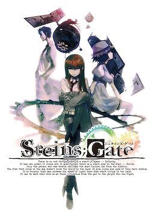
Ano de Lançamento: 2009.
Estúdio/Produtor: NITRO+.
Gênero: Ficção Científica/Mistério.
Duração: 43 horas e 20 minutos.
Classificação Indicativa:
Tem em pt-br: ✅
Sinopse:
Steins;Gate acompanha um grupo heterogêneo de jovens estudantes com conhecimento em
usando um
micro-ondas modificado. Seus experimentos para testar os limites dessa
descoberta começam a sair do
controle à medida que se envolvem em uma conspiração
envolvendo a SERN, a organização por trás do
Grande Colisor de Hádrons, e John Titor,
que afirma ser de um futuro distópico.
Portrait of a Ghost
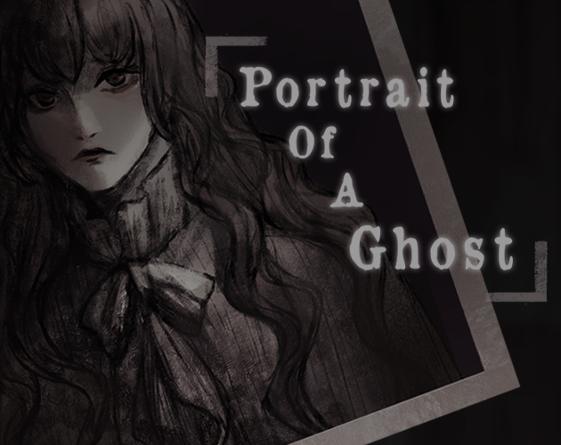
Ano de Lançamento: 2024.
Estúdio/Produtor: ENDYSIS.
Gênero: Terror.
Duração: 30 minutos.
Classificação Indicativa:
Tem em pt-br: ✅
Sinopse:
Arthur Hope é um fotógrafo de espíritos, capaz de capturar imagens dos falecidos com
sua câmera.
Pelo menos, é isso que ele quer que você acredite. Afinal, qualquer preço vale a pena
pagar para
ver o rosto de um ente querido novamente, não é?
Infelizmente para ele, fantasmas podem ser mais reais do que ele imaginava.
Tsubasa Heaven
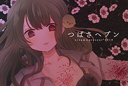
Ano de Lançamento: 2018.
Estúdio/Produtor: cream△.
Gênero: Terror Psicológico/Suspense.
Duração: 2 horas.
Classificação Indicativa:
Tem em pt-br: ✅
Sinopse:
Certa noite, o professor do ensino médio Kuzuki encontra por acaso sua aluna,
Haneishi, em uma
loja de conveniência.
Ele janta com ela e mantém o encontro em segredo de sua esposa grávida e de todos na
escola...
Será que esse ato o levará ao céu ou ao inferno?
Milk Inside a Bag of Milk Inside a Bag of Milk
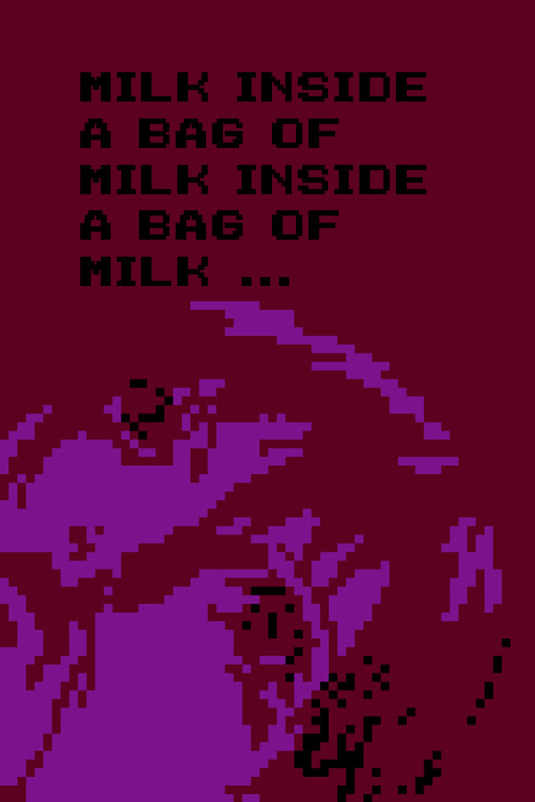
Ano de Lançamento: 2020.
Estúdio/Produtor: Nikita Krjukov.
Gênero: Horror Psicológico.
Duração: 30 minutos.
Classificação Indicativa:
Tem em pt-br: ✅
Sinopse:
Uma pequena história sobre os desafios que as pequenas coisas do dia a dia podem
representar.
Ajude a menina a comprar leite e seja o primeiro a não a desapontar.
G-senjou no Maou
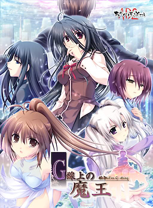
Ano de Lançamento: 2007.
Estúdio/Produtor: AKABEiSOFT2.
Gênero: Suspense Psicológico/Drama.
Duração: 35 horas e 28 minutos.
Classificação Indicativa:
Tem em pt-br: ✅
Sinopse:
Você assume o papel de Azai Kyousuke, filho de um lendário gângster infame no
submundo. Você
passa o tempo ouvindo Bach, brincando de Deus na escola e trabalhando
secretamente para seu
padrasto, um implacável magnata das finanças. Essa existência
idílica é interrompida quando duas
pessoas aparecem na cidade: uma bela garota
chamada Usami Haru, com cabelos longos e volumosos, e um
poderoso gangster
internacional conhecido apenas como "Maou". Quase que imediatamente, os dois
iniciam
um jogo mortal de gato e rato, colocando você e seus amigos no fogo cruzado. Tramas,
intrigas políticas e uma série de armadilhas interligadas são as armas nesta épica
batalha de
inteligência.
Narcissu
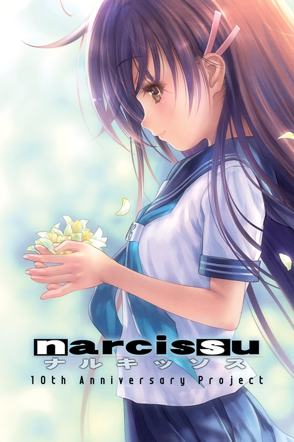
Ano de Lançamento: 2005.
Estúdio/Produtor: Stage-nana.
Gênero: Drama/Slice of Life.
Duração: 3 horas.
Classificação Indicativa:
Tem em pt-br: ✅
Sinopse:
O protagonista anônimo é diagnosticado com uma doença terminal pouco depois de
completar vinte
anos e é internado em um hospital em Mito, Ibaraki. Lá, ele conhece
Setsumi, uma mulher alguns anos
mais velha, que também está em fase terminal.
Percebendo que ambos se recusam a morrer, seja no
hospital ou em casa, eles roubam um
carro e fogem juntos.
Yume Miru Kusuri
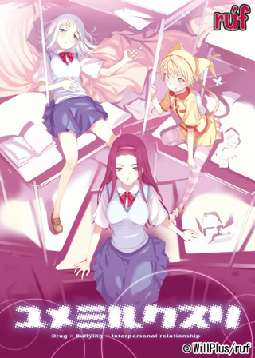
Ano de Lançamento: 2005.
Estúdio/Produtor: rúf.
Gênero: Drama/Romance.
Duração: 16 horas.
Classificação Indicativa:
Tem em pt-br: ❌
Sinopse:
Sou apenas um estudante comum, levando uma vida comum. Estudo, trabalho em meu
emprego de meio período e sigo meu dia a dia como qualquer outra pessoa, tentando não
me deixar
abater pelas pressões do Japão moderno. De repente, os ventos da mudança
sopram em minha vida quando
conheço três garotas que me transformam para sempre. Três
garotas que definitivamente não levam uma
vida normal como qualquer outra pessoa no
Japão, mas que parecem flutuar acima da sociedade,
estranhamente imunes a ela.
Instintivamente, sei que devo evitar me envolver com elas, mas, antes
que eu perceba,
meu destino está entrelaçado ao delas. Para onde tudo isso vai me levar?
REFLEXIA
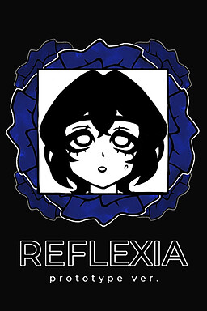
Ano de Lançamento: 2022.
Estúdio/Produtor: Nikita Krjukov.
Gênero: Paródia/Drama Psicológico.
Duração: 50 minutos.
Classificação Indicativa:
Tem em pt-br: ✅
Sinopse:
A protagonista passa os dias trancada em casa, mergulhando incontáveis horas em
jogos
eróticos. Ela acabaria morrendo de tédio se um dia não fosse teletransportada
para dentro de uma
visual novel!
Claro, uma situação dessas não é exatamente boa para a jovem. Você não só terá acesso
a todos os
seus pensamentos vergonhosos, como também exigirá entretenimento dela. Não
foi por isso que você
veio ler esta história?
Parece que agora ela precisará, no mínimo, sair para comprar mantimentos... Porque
não importa
aonde ela vá, a trama a aguardará!
Trilogia Muv-Luv
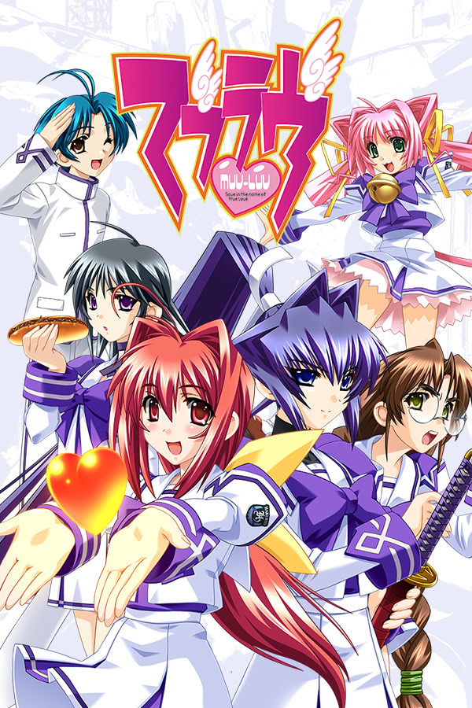
Ano de Lançamento: 2003.
Estúdio/Produtor: age.
Gênero: Mecha/Romance.
Duração: 90 horas.
Classificação Indicativa:
Tem em pt-br: ❌
Sinopse:
Shirogane Takeru é um típico estudante do ensino médio com uma atitude preguiçosa e
um amor pelo
jogo de batalha de mechas em realidade virtual Valgern-on. Mesmo sem
querer, ele é popular na
escola, principalmente por causa de suas brigas diárias com
sua amiga Sumika, que atraem muita
atenção. Sua vida dá uma guinada inesperada quando
ele encontra uma garota (Meiya) que ele não se
lembra de ter visto em sua cama uma
manhã. Mais tarde, é revelado que essa garota é a herdeira de um
dos maiores
zaibatsu. Ela se muda imediatamente para a casa dele e começa a mudar a vida dele
para melhor com sua determinação e recursos ilimitados.
Dies irae
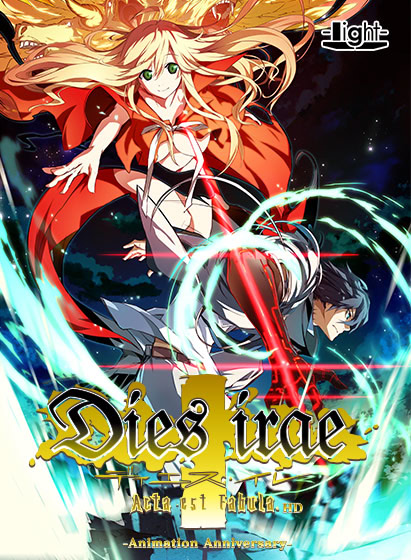
Ano de Lançamento: 2007.
Estúdio/Produtor: light.
Gênero: Fantasia/Sobrenatral.
Duração: 80 horas e 19 minutos.
Classificação Indicativa:
Tem em pt-br: ✅
Sinopse:
Ren Fujii, um estudante japonês, vê sua vida pacata destruída quando a Longinus
Dreizehn Orden,
um grupo de feiticeiros nazistas do fim da Segunda Guerra Mundial,
ressurge para realizar um ritual
apocalíptico. Ele precisa lutar contra esses seres
sobre-humanos para proteger sua cidade e amigos.
Shironagasu Tou e No Kikan
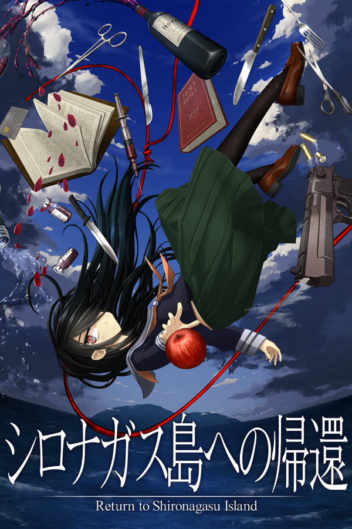
Ano de Lançamento: 2018.
Estúdio/Produtor: Tabi no Michi.
Gênero: Mistério/Horror.
Duração: 10 horas e 34 minutos.
Classificação Indicativa:
Tem em pt-br: ✅
Sinopse:
Sen Ikeda, um detetive de Nova York, recebe um misterioso convite para a Ilha
Shironagasu no
testamento de um milionário. Juntamente com Neneko Izumozaki, uma
garota com habilidades especiais,
ele viaja para a ilha isolada.
NEED GIRL OVERDOSE
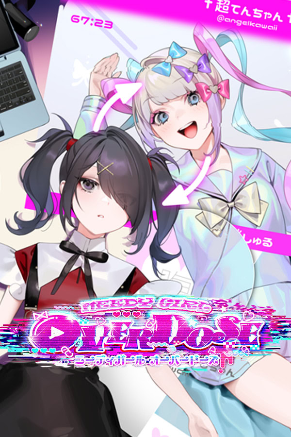
Ano de Lançamento: 2022.
Estúdio/Produtor: WSS playground.
Gênero: Horror Psicológicor.
Duração: 12 horas e 30 minutos.
Classificação Indicativa:
Tem em pt-br: ✅
Sinopse:
NEEDY GIRL OVERDOSE (NEEDY STREAMER OVERLOAD) é um "ADV com múltiplos finais" que
retrata o
cotidiano de "OMGkawaiiAngel", uma jovem com uma necessidade extrema de
aprovação que tenta se
tornar a "Anjo da Internet" (streamer) número 1. Aumente
gradualmente o número de seguidores de
OMGkawaiiAngel enquanto ela passa seus dias
fazendo transmissões ao vivo, usando vários
"anti-estresses" e, em geral, sendo meio
desastrada. Vivencie todos os altos e baixos e descubra por
si mesmo se essa história
é capaz de ter um final feliz.
Transforme "Ame" – uma garota um tanto problemática – em um anjo da internet
incrivelmente fofo
e impulsione sua carreira como streamer para os nerds mais
hardcore da internet!
Higanbana no Saku Yoru ni
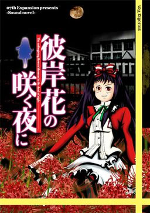
Ano de Lançamento: 2011.
Estúdio/Produtor: 07th Expansion.
Gênero: Horror.
Duração: 17 horas e 41 minutos.
Classificação Indicativa:
Tem em pt-br: ✅
Sinopse:
Marie está presa em uma situação terrível. Ela é constantemente atormentada por seus
colegas de
classe e assediada regularmente por seu professor. Sem ter para onde
recorrer, ela se vê pedindo
ajuda sobrenatural a um dos sete demônios dos sete
mistérios de sua escola. Tudo o que ela deseja é
a morte de seus cruéis colegas e de
seu professor. Até onde Marie estará disposta a ir para cometer
os assassinatos que a
libertarão desse inferno na Terra?
Kanon
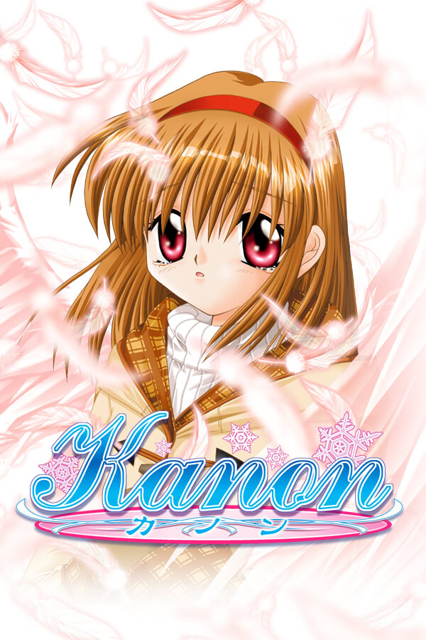
Ano de Lançamento: 1999.
Estúdio/Produtor: Key.
Gênero: Drama/Sobrenatural.
Duração: 31 horas e 15 minutos.
Classificação Indicativa:
Tem em pt-br: ✅
Sinopse:
É um dia de inverno e a neve cai em flocos...
Em um banco em frente à estação de trem, reencontro minha prima, Nayuki Minase, pela
primeira
vez em sete anos.
Nayuki e minha tia me acolheram de volta a esta cidade depois que precisei me mudar
repentinamente.
Ela também guarda algumas vagas lembranças da minha infância.
Nesta cidade, coberta por uma profunda camada de neve, cinco garotas e eu viveremos
pequenos
milagres.